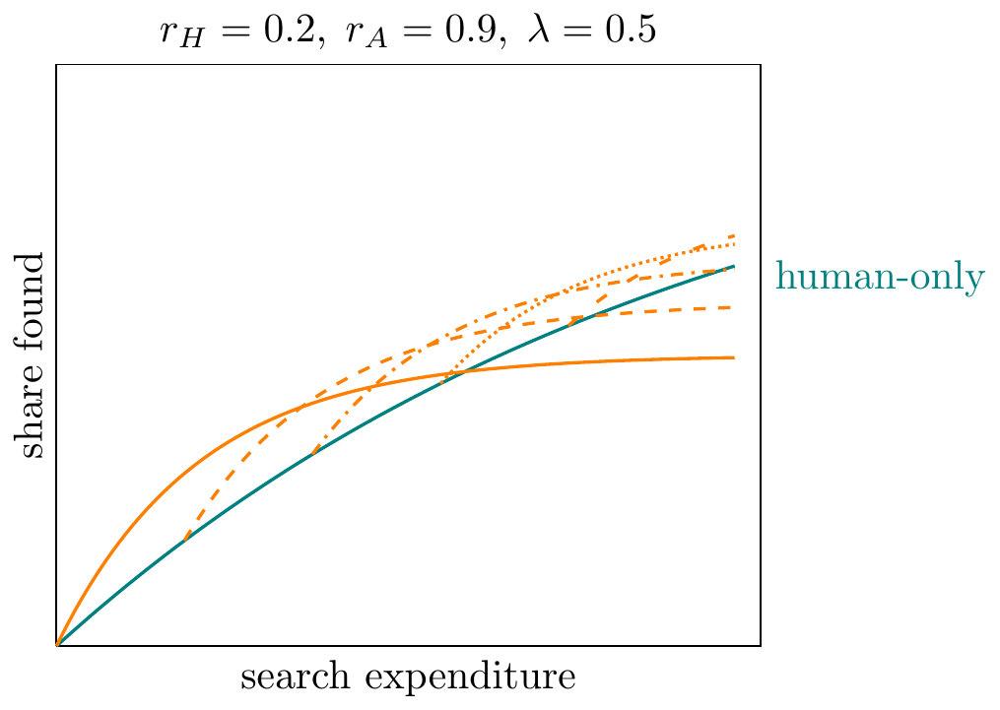
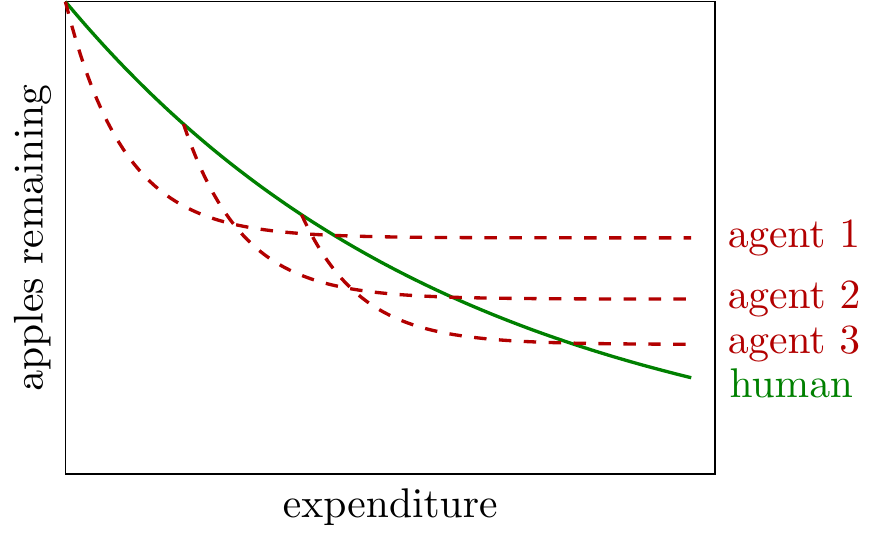
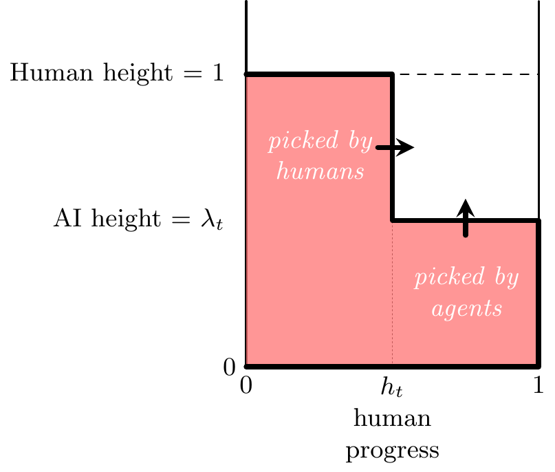

Thanks to Nate Rush, Thomas Kwa, Beth Barnes, Eli Lifland, Chris Ong, Basil Halperin, Tom Houlden, Parker Whitfill, Phil Trammell, & Andy Haupt for comments.
- An apple-picking model of AI R&D.
-
Many people are talking about how AI is autonomously able to contribute to frontier R&D, yet it’s only picking low-hanging fruit: Andrej Karpathy, Terence Tao, Nathan Lambert, Ryan Greenblatt.
In this note we describe a simple apple-picking model of AI R&D, to help measure the contribution that autonomous agents are making.
The model takes the metaphor literally: an AI agent helping you to optimize an algorithm is like a robot helping you pick apples. It will take care of all the apples up to a certain height, and it may find apples you haven’t found yet, but there will still be apples out of its reach.
The model implies that agents can push the frontier forward, but the returns will sharply diminish. It also implies we can measure an agent’s ability with a human-equivalent time horizon, e.g. as of March 2026 agents seem to be able to find optimizations on frontier algorithms worth about 1 week of professional human labor, yet those effects are not additive.1 You can’t get two weeks labor by running an agent twice.
The basic ideas can all be seen in the drawing below. Here the human and robot are both picking trees. The robot is cheaper to run, but it can only reach the low apples. In the illustration they have both picked 4 apples, yet left the tree in a very different state, such that the robot isn’t ready to replace the human yet:
We can write the core equation, where \(\lambda\) is the height of the robot, \(x_H\) and \(x_A\) are the expenditures on human and agent effort, and \(r_H\) and \(r_A\) are the rates at which they find unpicked apples:
\[\text{apples remaining}= \underbrace{\lambda e^{-r_Hx_H-r_Ax_A}}_{\text{apples on bottom}}+\underbrace{(1-\lambda)e^{-r_Hx_H}}_{\text{apples on top}}.\]
The plots below show two implications of the model:
- The agent will make quicker progress than the human at first, but eventually get overtaken (tortoise-hare dynamics)
- The agent will be able to accumulate more apples (leave fewer unpicked) if they start from a stronger human starting point


The model sits between a few different literatures in economics, but as far as I can tell doesn’t already exist:
- Models of tasks or knowledge hierarchies.2 The apple-picking model differs in that tasks are performed cumulatively, instead of a fresh set of tasks each period.
- Models of discovery.3 The apple-picking model models the discovery landscape in a different way (as far as I’m aware) which gives very simple clear results.
- Models of knowledge accumulation.4 The apple-picking model differs in that the state of knowledge is not represented by a single scalar, e.g. the stock of ideas, instead the state is the combination of low-hanging and high-hanging ideas.
Implications for AI R&D
- Start with the history of AI R&D.
-
We start with a graphical representation of AI progress: suppose there have been 10,000 person-years of R&D investment, and the loss metric (e.g. compute efficiency) has fallen by a factor of perhaps 10,000:

We wish to predict how the cost will fall in the future, given that the effort will now be assisted by AI.
- Traditional models of AI-assisted R&D imply a permanent acceleration.
-
There are two standard models of AI’s effect on R&D used in the RSI literature: (1) it multiplies the effectiveness of human researchers; (2) it replaces human researchers with computer researchers (see more discussion below). Both models imply that when AI capabilities get better it’ll lead to an acceleration in the rate of progress, which persists:

- Apple-picking implies one-time jumps in progress.
-
The apple-picking model implies a different pattern: for each model generation, agents will autonomously advance the frontier, but they will then quickly hit diminishing returns. When the marginal returns to human and agent expenditure are equalized, then we will return to investment in human optimization:

We give quotes below from a variety of domains with claims that (1) agents are autonomously advancing the frontier; (2) those advances have hit diminishing returns. We show below in the theory section that the optimal allocation of expenditure will be to first invest in agentic optimization, then switch back to humans.
As new more powerful agents are released, we should expect a sort-of punctuated equilibrium, as each successive branch of apples is picked. Terence Tao says, on Erdos problems: “Maybe the next time there’s a big advance in the models, they will try it again, and a few more will be breached.”
In reality aggregate progress is likely to appear smooth for a few reasons: (1) models are released at a quick cycle, and harnesses are constantly being updated; (2) each human discovery opens up room for agent discoveries (assumed away in the model); (3) LLMs are used to augment human activity, as well as autonomously do R&D.
- We can calibrate agentic value by time horizon.
-
Because of the tortoise-hare behavior of agents we can calibrate an agent’s ability by the point at which a human and an agent, given equal expenditure, will make equal progress. This is, very loosely, the way agent time horizon is identified in Wijk et al. (2025) and Kwa et al. (2025).

An important implication is that an agent’s time horizon is sensitive to the starting point, in a way that differs from human effort. If we have a starting-point that has only been optimized by humans we expect agents can push it forward a lot. But if we have already applied some agent labor to the algorithm then further agentic labor will have much lower returns, i.e. time horizons will be much shorter. Concretely: one agent can be as good as one human (or human-week), but two agents are not as good as two humans.
Based on a very loose reading of the evidence we could say that agents (as of March 2026) are able to push forward the frontier on optimization problems by the equivalent of around a month of professional effort. However they then hit a wall and need either stronger models or better harnesses.
- A low-hanging apple is whatever is easy for the agent.
-
The model defines a “low-hanging” optimization according to whether an agent can do it. There is a separate discussion of what specific types of tasks and ideas are within reach of agents (e.g. well-defined, hill-climbable, short-time-horizon).
The fact that there are stark differences between human and AI capabilities is often summarized with the phrase “jagged frontier”.
- The effects of agentic R&D depend on the type of problem.
-
We can draw some very heuristic diagrams representing the likely potential for agentic optimization across different parts of the AI stack:

We have drawn pre-training as top-heavy, meaning it’s relatively hard for agents to optimize, arguably because the feedback cycle is long and so it is expensive to tell whether a change will work at scale so may require deep human thought.
In contrast other parts of the stack can be more easily hill-climbed, cheaply iterating on ideas to find improvements, e.g. innovations to elicitation (e.g. prompting, harness iteration) is a space that can be relatively cheaply explored, and so agents may do well at.5
- Agents could kick-off recursive self-improvement.
-
Agentic R&D will be self-sustaining if, without human input, each successive generation is able to improve the next generation by a larger amount than the previous generation.
Concretely, if we measure agent ability with METR’s time horizon, then the condition for explosive growth is this: if each doubling of agent time horizon increases optimization ability sufficiently to cause more than 1 doubling of the next generation of models.
An implication is that the potential for RSI will depend on the shape of the tree, i.e. the stock of relatively simple optimizations that remain undiscovered, vs the necessity for finding deep optimizations.
- Miscellaneous points.
-
Uplift. In practice AI will both (A) accelerate humans; (B) replace humans. The apple-picking model only focuses on the second. In the long-run we expect the second effect to dominate, but it’s not clear where we are now.
Directed search. We assumed that the probability of finding an apple is independent of other apples already found. Realistically people have an ability to direct their attention, it’s not clear whether the implications would significantly change.
Bottlenecks. The discussion has assumed that progress is purely a function of thinking. In practice there are other bottlenecks, most concretely for AI R&D the reliance on using scarce compute to run experiments. It’s arguable how important compute scarcity is, see for example Whitfill and Wu (2025).
Evidence on Autonomous AI R&D
- Agents are improving on the state-of-the-art in well-studied optimization problems.
-
Google’s AlphaEvolve (Novikov et al. (2025), June 2025) is an evolutionary coding agent powered by Gemini models. They report a 23% speedup on a key Gemini training kernel and 0.7% of Google’s worldwide compute recovered through a better scheduling heuristic.
Andrej Karpathy’s autoresearch (March 2026) gets an agent to reducing validation loss from pretraining a GPT-2-small model given a fixed compute budget (one H100, ~5 minutes per training loop). Over ~2 days the agent tried ~700 changes and found ~20 additive edits, yielding an ~11% improvement in “Time-to-GPT-2”. Andrej Karpathy says “all the adjustments are ‘real’, I didn’t find them manually previously, and they stack up and actually improved nanochat.”
nanoGPT speedrun (Jordan and contributors (2026)) is a public competition to minimize training time for GPT-2 given a fixed target loss, which has brought training time from 45 min down to 1.4 min over 77 records since May 2024. Four recent improvements are tagged as contributed with the help of “AI systems”.
TTT-Discover (Yuksekgonul et al. (2026), January 2026), a test-time training method, optimized the TriMul GPU kernel used in AlphaFold, achieving >15% improvement over the best human implementations. The authors of the TriMul task, expert kernel engineers, called it “legit” and noted the strategy was “similar to the current best humans, but executed better,” with most human solutions falling behind on fusing more complex operators together.
- Some optimizations are deeper than others.
-
The nanoGPT speedrun provides a useful case study as a public ledger of cumulative human effort on an AI R&D problem. Some deep contributions, from humans, are:
- Muon (October 2024) came from original research in the nanogpt codebase on Newton-Schulz orthogonalization, cutting training time by 21% (31.4 → 24.9 min). It has since been adopted widely, including by Kimi K2 (1T MoE), GLM-4.5 (355B MoE), and Arcee Trinity (400B MoE), and is now part of PyTorch’s standard optimizer suite.
- U-Net skip connections (November 2024) applied an encoder-decoder pattern from 2015 computer vision to transformer layers, yielding an 8% speedup (7.8 → 7.2 min). This became foundational and later records kept building on it.
- Paired Head Attention (January 2026) is a novel attention mechanism that interleaves K/Q/V across head pairs to double the effective sequence length in attention.
These required theoretical insight, cross-domain transfer, or novel architectural ideas.
Many other records in the speedrun are imported from other projects, e.g. bundling known techniques like ReLU² and QK-norm (32% speedup), importing FlexAttention (30% speedup), (5% speedup), or upgrading PyTorch (8% speedup).
Others could be described as “shallow”, e.g. lowering the logit softcap from 30 to 15.
- Agent optimizations are often described as shallow.
-
Several AI R&D and optimization benchmarks, such as MLGymBench (Nathani et al. (2025)), GSO (Shetty et al. (2025)), and SWE-fficiency (Ma et al. (2025)), report that agents achieve “surface-level speedups” but “fail to discover algorithmic innovations.” For instance, one of the largest speedups in AlgoTune (Press et al. (2025)) is a 142× on a graph communicability task, achieved by replacing pure Python with BLAS calls.
In nanoGPT speedrun the AI-contributed patches appear to be shallow relative to the optimizations above (e.g., Muon’s 21% speedup): replacing Python loops with faster library calls (hiverge.ai, ~1.2%) and combining two GPU operations to avoid writing intermediate results to memory (Locus, ~0.9%). These can be classified as typical optimization techniques that apply to many problems.
In autoresearch Karpathy says “It’s not novel, ground-breaking ‘research’ (yet), but all the adjustments are ‘real’”. The improvements that worked were things like adjusting AdamW constants, adding a scalar multiplier for QKnorm, and even making random seed changes. Overall he notes that the agents feel “cagey” on open-ended ideas.
Terence Tao has described the contribution of AI to mathematical discovery:
“What AI has been very good at is systematically exploring this long tail and knocking off the easiest of the problems.” (ref):
“Fifty-odd problems have been solved with AI assistance, which is great, but there’s like six hundred to go. People are still chipping away at one or two of these right now.” (ref)
Discussion
- This is distinct from other models of recursive self-improvement.
-
We can put many existing models of AI R&D in two buckets:6
- Apples can make the human pick faster. Here AI R&D speeds up humans, typically by automating some of the tasks that are necessary for doing R&D (Aghion, Jones, and Jones (2019), B. F. Jones (2025), Kwa (2026)).
- Apples can be used to make more human-sized robots. Here AI R&D is already able to replicate human-level R&D, but the bottleneck is the cost of compute, and further AI progress lowers that cost, thereby expanding the AI R&D workforce (Davidson (2021), Davidson and Houlden (2025), Ho and Whitfill (2025), Eth and Davidson (2025), Davidson et al. (2026)).
Broadly these could be thought of as models of “early” and “late” RSI. The early models assume humans are still required, the late models assumes that AI has already reached parity with humans, and then it is only a matter of further scaling up, and so bottlenecks on cost become binding (though it’s worth noting that early-RSI models can still predict explosive growth).
There is some awkwardness in fitting both these classes of model to our current situation, because AI seems to already be autonomously contributing to AI research, yet not replacing humans, i.e. autonomous agents are not perfect substitutes for humans.
The model in this post is distinct from both: we assume there are plenty of robots, but the robots are limited in ability, and successive generations can reach higher. Thus agents cause neither a multiplicative boost to human productivity, nor a perfect substitute for human labor.
A critical distinction is how we represent the state. Most existing models summarize the level of productivity (or stock of knowledge) with a single number, meaning there’s no distinction between a shallow and deep contribution to the state of knowledge, all that matters is the total stock of ideas (or the efficiency of the algorithm). The apple-picking model keeps track of the state with two numbers: the share of apples remaining above \(\lambda\) (the robot’s height), and the share below \(\lambda\). For the RSI version of the model we instead track the robot’s height (\(\lambda_n\)) and the share of apples remaining above that threshold.
- Apple-picking is a simplification of a landscape-navigation problem.
-
We think of the apple-picking model as a simplification of a more general landscape-navigation model, where you are trying to find a minimum over a bumpy landscape. You can represent an optimization problem as \(y=f(\bm{x})\), where you’re trying to choose an \(\bm{x}\) to minimize \(y\), given some unknown \(f(\cdot)\). An immediate observation from landscape-navigation problem is that the current elevation is not a sufficient statistic for your state, unless you have a degenerate landscape, like the random landscapes in Kortum (1997).
A reasonable conjecture seems to be that AI agents are good at local optimization, e.g. climbing small hills, worse at global optimization, i.e. finding distant hills.
Terence Tao has a similar landscape-navigation metaphor
“These AI tools, they’re like jumping machines that can jump two meters in the air, higher than any human. Sometimes they jump in the wrong direction, and sometimes they crash, but sometimes they can reach the tops of the lowest walls that we couldn’t reach before. We’ve just set them loose in this mountain range, hopping around. There was this exciting period where they could actually find all the low ones and reach them. Maybe the next time there’s a big advance in the models, they will try it again, and a few more will be breached. But it’s a different style of doing mathematics. Normally we would hill climb, make little markers, and try to identify partial things. These tools either succeed or they fail. They’ve been really bad at creating partial progress or identifying intermediate stages that you should focus on first. Going back to this previous discussion, we don’t have a way of evaluating partial progress the same way we can evaluate a one-shot success or failure of solving a problem.”*
The apple-picking model can be thought of as navigation of a multi-dimensional landscape, where the payoff is separable in subspaces, where each subspace represents an apple.
Static Model
- Setup.
-
Apples are spread on [0,1] with density function \(F(\cdot)\).
A human can find apples over \([0,1]\), but an agent can only find apples over \([0,\lambda]\), with \(\lambda < 1\) (at least for now).
Humans find unpicked apples at rate \(r_H\), agents find apples at rate \(r_A\), and we use \(x_H\) and \(x_A\) to represent the expenditure on humans and agent searching.
We can then derive apples remaining:
\[\text{apples remaining}= \underbrace{F(\lambda) e^{-r_Hx_H-r_Ax_A}}_{\text{apples on bottom}}+\underbrace{(1-F(\lambda))e^{-r_Hx_H}}_{\text{apples on top}}.\]
- We can illustrate the state of the apple tree:
-

- Implication: agents asymptote to a higher level of remaining apples than humans.
-
Here we illustrate agent-only and human-only search curves: the agent curve falls more quickly (\(r_A>r_H\)), but asymptotes to a higher level of remaining apples (\(\lambda<1\)).

We see roughly this shape when comparing human and AI scaling on continuously-scored AI R&D tasks, e.g. in RE-Bench (Wijk et al. (2025)):

RE-Bench scaling - Implication: agents can improve on human SoTA, but only by a limited amount.
-
The plot below shows the returns on human and agent performance. The y-axis shows human-only apples remaining, which you can interpret as the remaining gaps after the effort of a single human or the cumulative effort of humanity. At each vertical point, moving to the right (adding agent optimizations) lowers the remaining apples, but only by a limited amount.

- Implication: first spend on agents, then on humans.
-
We now overlay the optimal expenditure as budget increases: the blue line shows optimal expenditure, which is first to spend on agents (which are cheaper), but then on humans. Equating the marginal returns \(\lambda r_A e^{-r_Hx_H-r_Ax_A}\) and \(r_H[\lambda e^{-r_Hx_H-r_Ax_A}+(1-\lambda)e^{-r_Hx_H}]\), the ratio depends only on \(x_A\), giving a fixed threshold \(\bar{x}_A\):
\[(x_A^*,\, x_H^*) = \begin{cases} (B,\; 0) & \text{if } B \leq \bar{x}_A \\ (\bar{x}_A,\; B - \bar{x}_A) & \text{if } B > \bar{x}_A \end{cases}\]
where \(\bar{x}_A = \frac{1}{r_A}\ln\!\left(\frac{\lambda(r_A-r_H)}{(1-\lambda)\,r_H}\right)\), provided \(\lambda r_A > r_H\) (agents are initially preferred).

- Implication: the agent asymptote depends on the starting point.
-
The plot below shows a variety of agent trajectories, each starting after a different amount of human work.
You could interpret this as starting an agent at different points in the history of optimizing some algorithm, e.g. nanoGPT.
The model implies that if you start an agent from the original unoptimized version of an algorithm it will quickly reduce the remaining apples, but asymptote to a value well above the human state-of-the-art.
If you start an agent after some human optimization has been performed the agent will contribute less at first (because fewer apples remain), but it will be able to achieve a lower asymptote.

Dynamic Model (Recursive Self-Improvement)
- This is a very simple model.
- We can close the model above, and get a dynamic model of recursive self-improvement. The model below is just a proof of concept, the main conclusion is just that you’ll get recursively-self-improving robots if the low-hanging apples are sufficiently dense. Nevertheless I found it useful for my own thought, & I would love to spend more time filling this out to help with making some quantitative predictions.
- Let the robot’s height depend on apples harvested.
-
The previous model applied to agents working on an arbitrary optimization problem. Now we focus on agents working on AI R&D, which in turn increases agent ability.
We make two changes:
- We now track progress in picking apples over periods. Each period represents a generation of AI models, and we assume that agents pick all the apples available to them in each period (apples below \(\lambda_t\)). This makes things easier to model because the state of the tree can be summarized with just two variables (robot height and human time), instead of the entire profile of the tree. It also seems like a reasonable assumption: AI research labs will keep spending money on agent-optimizing their algorithms until there are low returns to additional use.
- We assume that the robot’s height in period \(t+1\) is a function of cumulative apples harvested by period \(t\), i.e. the robot is eating the apples and getting taller.
- The figure below shows the basic model.
-

State variables and dynamics
- Assumptions.
- Apples are distributed with cumulative distribution function \(F(.)\), agent reach in period \(t\) is \(\lambda_t\geq0\), and human reach is always 1.
- Apples harvested.
-
Each period, agents pick all the apples below \(\lambda_t\), and humans pick a fraction \((1-p)\) of the apples that remain between \(\lambda_t\) and 1, thus we can write:
\[\begin{aligned} \utt{a_{i,t}}{share harvested}{height $i$, time $t$} &= \begin{cases} 0 &, \max\{\lambda_t,1\} < i & \text{(beyond reach of both)}\\ h_t &, \lambda_t < i \leq 1 & \text{(human-only reach)}\\ 1 &, i \leq \lambda_t & \text{(within robot reach)} \end{cases}\\ h_t &= 1-p^t \ \ \text{(human picked apples at time $t$)} \end{aligned}\]Thus we can write: \[\utt{a_t(\lambda_t,h_t)}{total apples}{harvested} =\begin{cases} F(\lambda_t) + h_t[F(1)-F(\lambda_t)] &, \lambda_t<1 & \text{(regular agents)} \\ F(\lambda_t) &, \lambda_t\geq 1 & \text{(superhuman agents)} \end{cases}\]
- Self-improvement.
-
Finally to close the model we let next-period robot height (\(\lambda_t\)) depend on cumulative apples harvested (\(a_t\)). We assume height is linear in apples, after surpassing a minimum number of apples (\(\bar{a}\)):
\[\lambda_{t+1}(a_t) = \beta \max\{0,a_t-\bar{a}\}.\]
These two equations above give us a recursive system.
Observations
- Human-only labor.
-
With human labor only then apples will grow with diminishing returns: \[a_t=(1-p^t)F(1).\]
This will characterize progress prior to the point at which we can build the first useful robot, \(a_t \geq \bar{a}\), after which progress begins to accelerate.
- Recursive self-improvement.
- With robot labor only (holding \(h_t\) fixed), then progress will be self-sustaining if and only if apples are sufficiently dense in the neighborhood of that robot height, i.e. if \(f(\lambda_t)\beta>1\).

Embedding Apple-Picking into Jones-model R&D
We can embed the apple-picking model into the workhorse R&D function from C. I. Jones (1995) as follows, with the following implications:
- Human-only effort has constant elasticity.
- Agent effort has declining elasticity.
- Human & agent effort are complements up to a point.
We start with this function:
\[\utt{\frac{\dot{A}}{A}}{growth rate}{of ideas} \propto \utt{R^\gamma}{research}{inputs} \times \utt{A^{-\beta}}{fishing}{out}\]
This can be rewritten in a cumulative form, where \(\bar{R}_t\) represents the total research (adjusted for congestion) up to time \(t\), then (assuming \(A_0\) is small):
\[A_t \approx \bar{R}_t^{1/\beta}\]
We can compare this to our apple-picking function, with only human effort \(x\): \[\ut{a(x)}{apples} = 1-e^{-rx}\]
These can be reconciled if we assume ideas is a nonlinear function of apples-picked (\(a\)): \[A(a)=\ln\left(\frac{1}{1-a(x)}\right)^{1/\beta}.\]
We can then consider progress in ideas with both humans and robots picking apples, \(a(x_H,x_L)\): \[A(a)=\left[\ln\left(\frac{1}{\lambda e^{-r_Hx_H-r_Ax_A}+(1-\lambda)e^{-r_Hx_H}}\right)\right]^{1/\beta}.\]
Implications:
- Human-only
References
Acemoglu, Daron, and Pascual Restrepo. 2022. “Tasks, Automation, and the Rise in US Wage Inequality.” Econometrica 90 (5): 1973–2016. https://doi.org/10.3386/w28920.
Aghion, Philippe, Benjamin F. Jones, and Charles I. Jones. 2019. “Artificial Intelligence and Economic Growth.” In The Economics of Artificial Intelligence: An Agenda, edited by Ajay Agrawal, Joshua Gans, and Avi Goldfarb, 237–90. Chicago: University of Chicago Press. https://doi.org/10.7208/9780226613475-011.
Agrawal, Ajay, John McHale, and Alexander Oettl. 2019. “Finding Needles in Haystacks: Artificial Intelligence and Recombinant Growth.” In The Economics of Artificial Intelligence: An Agenda, edited by Ajay Agrawal, Joshua Gans, and Avi Goldfarb, 149–74. Chicago, IL: University of Chicago Press. https://doi.org/10.7208/9780226613475-007.
Carnehl, Christoph, and Johannes Schneider. 2025. “A Quest for Knowledge.” Econometrica 93 (2): 623–59. https://doi.org/10.3982/ECTA22144.
Davidson, Tom. 2021. “Could Advanced AI Drive Explosive Economic Growth.” Open Philanthropy 25. https://www.openphilanthropy.org/research/could-advanced-ai-drive-explosive-economic-growth.
Davidson, Tom, Basil Halperin, Thomas Houlden, and Anton Korinek. 2026. “When Does Automating AI Research Produce Explosive Growth?” https://www.basilhalperin.com/papers/shs.pdf.
Davidson, Tom, and Tom Houlden. 2025. “How Quick and Big Would a Software Intelligence Explosion Be?” https://www.forethought.org/research/how-quick-and-big-would-a-software-intelligence-explosion-be.
Eth, Daniel, and Tom Davidson. 2025. “Will AI r&d Automation Cause a Software Intelligence Explosion?” https://www.forethought.org/research/will-ai-r-and-d-automation-cause-a-software-intelligence-explosion.
Garicano, Luis, and Esteban Rossi-Hansberg. 2006. “Organization and Inequality in a Knowledge Economy.” The Quarterly Journal of Economics 121 (4): 1383–1435. https://doi.org/10.1162/qjec.121.4.1383.
Ho, Anson, and Parker Whitfill. 2025. “The Software Intelligence Explosion Debate Needs Experiments.” https://epoch.ai/gradient-updates/the-software-intelligence-explosion-debate-needs-experiments.
Ide, Enrique, and Eduard Talamas. 2024. “Artificial Intelligence in the Knowledge Economy.” https://doi.org/10.1086/737233.
Jones, Benjamin F. 2025. “Artificial Intelligence in Research and Development.” NBER Working Paper 34312. National Bureau of Economic Research. https://doi.org/10.3386/w34312.
Jones, Charles I. 1995. “R&d-Based Models of Economic Growth.” Journal of Political Economy 103 (4): 759–84. https://doi.org/https://doi.org/10.1086/262002.
Jordan, Keller, and contributors. 2026. “Modded-Nanogpt.” https://github.com/KellerJordan/modded-nanogpt.
Kokotajlo, Daniel, Eli Lifland, Brendan Halstead, and Alex Kastner. 2025. “AI Futures Model: Dec 2025 Update.” https://blog.ai-futures.org/p/ai-futures-model-dec-2025-update.
Kortum, Samuel. 1997. “Research, Patenting, and Technological Change.” Econometrica 65 (6): 1389–419. https://doi.org/10.2307/2171741.
Kwa, Thomas. 2026. “Research Note: A Simpler AI Timelines Model Predicts 99% AI r&d Automation in ~2032.” https://www.lesswrong.com/posts/uy6B5rEPvcwi55cBK/research-note-a-simpler-ai-timelines-model-predicts-99-ai-r.
Kwa, Thomas, Ben West, Joel Becker, Amy Deng, Katharyn Garcia, Max Hasin, Sami Jawhar, et al. 2025. “Measuring AI Ability to Complete Long Tasks.” arXiv Preprint arXiv:2503.14499. https://doi.org/10.48550/arXiv.2503.14499.
Ma, Jeffrey Jian, Milad Hashemi, Amir Yazdanbakhsh, et al. 2025. “SWE-fficiency: Can Language Models Optimize Real-World Repositories on Real Workloads?” https://arxiv.org/pdf/2511.06090.pdf.
Nathani, Deepak, Lovish Madaan, Nicholas Roberts, et al. 2025. “MLGym: A New Framework and Benchmark for Advancing AI Research Agents.” https://arxiv.org/pdf/2502.14499.pdf.
Novikov, Alexander, Ngân Vũ, Marvin Eisenberger, Emilien Dupont, Po-Sen Huang, Adam Zsolt Wagner, Sergey Shirobokov, et al. 2025. “AlphaEvolve: A Coding Agent for Scientific and Algorithmic Discovery.” arXiv Preprint arXiv:2506.13131. https://doi.org/10.48550/arXiv.2506.13131.
Press, Ori, Brandon Amos, Haoyu Zhao, et al. 2025. “AlgoTune: Can Language Models Speed up General-Purpose Numerical Programs?” https://arxiv.org/pdf/2507.15887.pdf.
Shetty, Manish, Naman Jain, Jinjian Liu, Vijay Kethanaboyina, Koushik Sen, and Ion Stoica. 2025. “GSO: Challenging Software Optimization Tasks for Evaluating SWE-Agents.” https://arxiv.org/pdf/2505.23671.pdf.
Whitfill, Parker, and Cheryl Wu. 2025. “Will Compute Bottlenecks Prevent an Intelligence Explosion?” https://arxiv.org/abs/2507.23181.
Wijk, Hjalmar, Tao Lin, Joel Becker, Sami Jawhar, Neev Parikh, Thomas Broadley, Lawrence Chan, et al. 2025. “RE-Bench: Evaluating Frontier AI r&d Capabilities of Language Model Agents Against Human Experts.” https://arxiv.org/abs/2411.15114.
Yuksekgonul, Mert, Daniel Koceja, Xinhao Li, Federico Bianchi, Jed McCaleb, Xiaolong Wang, Jan Kautz, et al. 2026. “Learning to Discover at Test Time.” arXiv Preprint arXiv:2601.16175. https://test-time-training.github.io/discover.pdf.
Footnotes
E.g. Ryan Greenblatt says “I tentatively believe the AI made somewhere between a few days and a bit over a week of progress on this task relative to a strong human professional.”↩︎
E.g. Acemoglu and Restrepo (2022), Garicano and Rossi-Hansberg (2006), Ide and Talamas (2024)↩︎
Carnehl and Schneider (2025), Agrawal, McHale, and Oettl (2019)↩︎
C. I. Jones (1995), Aghion, Jones, and Jones (2019), B. F. Jones (2025)↩︎
Note that we should expect the returns to human labor to be roughly equalized across each of these trees, so the thickness of the trees isn’t important for agent:human contribution, but the relative density of low and high apples.↩︎
An exception to this classification is Kokotajlo et al. (2025), which models “research taste” in both humans and AIs. However that model also represents the state with a scalar (“software efficiency”), so I do not believe it could reproduce some of the behaviors described upfront.↩︎